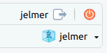

# Set the R library to load packages from
.libPaths("/fs/ess/PAS0471/jelmer/R/metabar")
dyn.load("/fs/ess/PAS0471/jelmer/software/GLPK/lib/libglpk.so.40", local = FALSE)Alpha & beta diversity statistics
1 Introduction
Goal: Learn some basic analysis and visualizations that are possible in phyloseq and vegan packages.
Answer some of the following questions:
- Relative abundance — What are some of the larger genera present in my dataset and are they more represented in some samples than others?
- Alpha diversity — How diverse is my community?
- Beta diversity — How different are the communities across my treatments?
- Permutational ANOVA (PERMANOVA) — Are my communities structured by a known environmental factor (sampling location, rotation treatment)?
2 Setting up
If you need to start a new RStudio Server session at OSC or open your RStudio Project, see the box below.
Start an RStudio Server job at OSC & open your RStudio Project (Click to expand)
Start an RStudio Server job
- Log in to OSC at https://ondemand.osc.edu.
- Click on
Interactive Apps(top bar) and thenRStudio Server(all the way at the bottom). - Fill out the form as follows:
- Cluster:
Pitzer - R version:
4.3.0 - Project:
PAS2714 - Number of hours:
4 - Node type:
any - Number of cores:
4
- Cluster:
- Click
Launchand once your job has started, clickConnect to RStudio Server.
Open your RStudio Project
- Your RStudio Project at
/fs/ess/PAS2714/users/<user>may have automatically opened. You can see whether a Project is open, and if so, which one, in the top-right of your screen (left screenshot below) - If your Project isn’t open, click on the R-in-a-box icon to open it (right screenshot below):

jelmer is open.Your Project name is also your username.

Create a new script (Optional)
Click File > New file > R script, and immediately save the new file (File > Save as) as diversity.R inside your scripts directory1.
We recommend that you copy-and-paste (or type, if you prefer) code from this webpage into your script and then execute the code. That way, you’ll have a nice record of what you did, exactly.
Loading packages
# Load the packages (package startup messages are not printed below)
library(vegan)
library(tidyverse)
library(phyloseq)
library(microViz)We’re loading the following packages:
- tidyverse - A package for speeding up, organizing, streamlining and visualizing data science.
- phyloseq - A package for organizing, analyzing and visualizing microbial community analysis.
- vegan - Community ecology data analysis
- microViz - We’re only using this package for its
distinct_palette()function to generate a large color palette.
Settings
# Set the ggplot plot theme
theme_set(theme_bw())
theme_update(panel.grid.minor = element_blank())
# Set a random seed for ordination analyses
set.seed(3131)Define our directories
First, let’s set up our directories:
# Dir with input files:
indir <- "results/ps_fulldata"
# Dir for output:
outdir <- "data/postASV_analysis"Load the phyloseq object
Lets load our phyloseq object. This is a different object than the one we generated in the DADA2 workflow in the previous session. The object in part one was generated using a subset of data in order to speed up the analysis. The object here contains all of the data from the experiment.
ps <- readRDS(file.path(indir, "bac22rot_w_ASV.rds"))Our phyloseq object is made up of the following components (“slots”):
- otu_table - OTU/ASV abundance table - how many copies of each ASV are present in each of our samples
- sample_data - metadata table contains information about the samples including treatments such as location and rotation treatment
- tax_table - a table of taxonomic assignments for each ASV, typically containing taxonomic assignments at different levels (phylum, order, class, etc)
- phy_tree - a phylogenetic tree of the ASV (optional)
- refseq - the nucletotide sequences for each ASV
Let’s have a look at the object:
psphyloseq-class experiment-level object
otu_table() OTU Table: [ 8088 taxa and 30 samples ]
sample_data() Sample Data: [ 30 samples by 7 sample variables ]
tax_table() Taxonomy Table: [ 8088 taxa by 9 taxonomic ranks ]
phy_tree() Phylogenetic Tree: [ 8088 tips and 8078 internal nodes ]
refseq() DNAStringSet: [ 8088 reference sequences ]# And the assigned taxon names:
taxa_names(ps)[1:3][1] "ASV_1" "ASV_2" "ASV_3"3 Filter samples
Filtering out any uninformative samples – those with low total taxon counts. First, how many counts do we have for each sample?
sort(sample_sums(ps))T22NW403BC T22NW404A T22NW103AB T22NW203BC T22NW404BC T22NW203A T22W205BC
42998 44212 46909 48149 48452 49440 53456
T22NW201C T22NW403A T22W101C T22W103C T22W101AB T22NW201AB T22W205A
54378 56468 57650 58325 58696 59083 59975
T22NW305C T22NW305AB T22NW102AB T22W303AB T22W303C T22W204A T22NW103C
60127 60746 60750 61205 67292 69701 70054
T22NW102C T22W103AB T22W204BC T22W404BC T22W304AB T22W403AB T22W404A
70956 73787 80628 80900 81796 87470 94857
T22W304C T22W403C
100448 124441 To remove uninformative samples, we will only keep those with over 1,000 counts — though note that in our case, this won’t remove any samples.
# Remove samples with low counts:
ps <- subset_samples(ps, sample_sums(ps) > 1000)Let’s take a look at some of the components of our current phyloseq object:
# The sample data (metadata)
sample_data(ps)[1:10] Year Location Rotation Plot TRT Block Sampling.Date
T22NW102AB 2022 NWARS CS 102AB 2 100 June, 2022
T22NW102C 2022 NWARS CS 102C 7 100 June, 2022
T22NW103AB 2022 NWARS CSW 103AB 3 100 June, 2022
T22NW103C 2022 NWARS CSW 103C 8 100 June, 2022
T22NW201AB 2022 NWARS CSW 201AB 3 200 June, 2022
T22NW201C 2022 NWARS CSW 201C 8 200 June, 2022
T22NW203A 2022 NWARS CS 203A 7 200 June, 2022
T22NW203BC 2022 NWARS CS 203BC 2 200 June, 2022
T22NW305AB 2022 NWARS CS 305AB 2 300 June, 2022
T22NW305C 2022 NWARS CS 305C 7 300 June, 2022# The count table
head(t(otu_table(ps)[1:10]))OTU Table: [10 taxa and 6 samples]
taxa are columns
ASV_1 ASV_2 ASV_3 ASV_4 ASV_5 ASV_6 ASV_7 ASV_8 ASV_9 ASV_10
T22NW102AB 0 0 0 0 0 0 0 0 0 0
T22NW102C 0 0 0 0 0 0 0 0 0 0
T22NW103AB 0 2 0 2 0 0 0 0 0 0
T22NW103C 0 0 0 0 0 0 2 0 0 0
T22NW201AB 13 0 0 0 0 0 0 0 0 0
T22NW201C 0 0 0 0 0 0 0 0 0 0# The taxonomy table
head(tax_table(ps))Taxonomy Table: [6 taxa by 9 taxonomic ranks]:
Kingdom Phylum Class Order Family Genus
ASV_1 "Bacteria" NA NA NA NA NA
ASV_2 "Bacteria" "Proteobacteria" "Alphaproteobacteria" NA NA NA
ASV_3 "Bacteria" "Proteobacteria" NA NA NA NA
ASV_4 "Bacteria" "Proteobacteria" NA NA NA NA
ASV_5 "Bacteria" "Proteobacteria" NA NA NA NA
ASV_6 "Bacteria" NA NA NA NA NA
Species Species_exact confidence
ASV_1 NA NA "0.70"
ASV_2 NA NA "0.50"
ASV_3 NA NA "0.56"
ASV_4 NA NA "0.56"
ASV_5 NA NA "0.57"
ASV_6 NA NA "0.99" 4 Plotting relative abundances
What are some of the larger genera present in my dataset and are they more represented in some samples than others?
Subset to only keep bacteria:
bacteria <- subset_taxa(ps, Kingdom == "Bacteria")
bacteriaphyloseq-class experiment-level object
otu_table() OTU Table: [ 8088 taxa and 30 samples ]
sample_data() Sample Data: [ 30 samples by 7 sample variables ]
tax_table() Taxonomy Table: [ 8088 taxa by 9 taxonomic ranks ]
phy_tree() Phylogenetic Tree: [ 8088 tips and 8078 internal nodes ]
refseq() DNAStringSet: [ 8088 reference sequences ]Process and filter to only keep abundant genera and sort alphabetically:
bacteria_genera <- bacteria %>%
tax_glom(taxrank = "Genus") %>% # agglomerate at Genus level
transform_sample_counts(function(x) {x / sum(x)} ) %>% # Transform to rel. abundance
psmelt() %>% # Melt to long format
filter(Abundance > 0.03) %>% # Filter out low abundance taxa
arrange(Genus) # Sort data frame alphabetically by GenusGenerate a relative abundance plot, by sample:
# Relative abundance by sample and rotation treatment
ggplot(bacteria_genera, aes(x = Sample, y = Abundance, fill = Genus)) +
facet_wrap(vars(Rotation), nrow = 2, scales = "free_y") +
coord_flip() +
geom_col() +
scale_fill_manual(values = microViz::distinct_palette(pal = "kelly")) +
guides(fill = guide_legend(reverse = TRUE, keywidth = 1, keyheight = 1)) +
labs(y = "Relative Abundance (Genera > 2%)",
title = "Relative Abundance of Bacteria",
x = NULL)5 Alpha Diversity
Alpha diversity analysis asks the question, how diverse is my community?
Usually expressed in terms of species richness (number of species or number of ASVs). It defines the biological diversity within a ecosystem, community, etc.
Alpha diversity has been given different definitions by several ecologists. And these various definitions might be influenced by different assumptions of species diversity. This is the reason why most researchers have been utilizing more than one index of diversity.
Measurements for species richness: Observed richness
Can also be expressed by diversity indices which take into account species richness and evenness. Evenness provides information about the equity in species abundance in each sample, to put another way: is there one dominant species or are there a lot of species that have similar abundances?
Diversity indices: Simpson, Shannon, Inverse Simpson
Phyloseq has a lot of options for plotting alpha diversity. We will take a looks at a few here.
First, alpha diversity by sample, using observed richness (# of ASVs):
# plot alpha diversity by sample
plot_richness(ps, measures = "Observed")Warning in estimate_richness(physeq, split = TRUE, measures = measures): The data you have provided does not have
any singletons. This is highly suspicious. Results of richness
estimates (for example) are probably unreliable, or wrong, if you have already
trimmed low-abundance taxa from the data.
We recommended that you find the un-trimmed data and retry.We can combine multiple diversity measures into one graph. Here we also combine samples by treatment, such as our rotational scheme. Adding color to take a look at if location stands out as a potential difference maker here.
# plot multiple indices
plot_richness(ps,
x = "Rotation",
color = "Location",
measures = c("Observed", "Shannon", "Simpson", "InvSimpson")) +
theme(legend.position = "top")Lets compare plots combining rotational treatments across sites and the diversity at the individual sites.
plot_richness(ps, x = "Rotation", measures = c("Observed", "Shannon")) +
geom_boxplot()plot_richness(ps, x = "Location", measures = c("Observed", "Shannon")) +
geom_boxplot()Using ggplot to add some color to the figure:
# Make alpha diversity figure
plot_richness(ps,
x = "Location",
measures = c("Observed", "Shannon"),
color = "Location",
nrow = 1) +
geom_boxplot() +
geom_jitter(width = 0.05) +
theme(legend.position = "none") +
labs(x = "Location", y = "Diversity")Calculate differences between alpha diversity metrics between samples
Here we used a non-parametric pairwise Wilcoxon test to compare diversity between our locations:
# Calculate diversity metrics using estimate_richness and store the data using a vector
rich <- estimate_richness(ps, measures = c("Observed", "Shannon"))
# Compare observed diversity between our sample location
wilcox.observed <- pairwise.wilcox.test(rich$Observed,
sample_data(ps)$Location,
p.adjust.method = "BH")
wilcox.observed
Pairwise comparisons using Wilcoxon rank sum test with continuity correction
data: rich$Observed and sample_data(ps)$Location
NWARS
WARS 0.0083
P value adjustment method: BH What needs to change in order to test for differences in the Shannon index?
How about between our rotational treatments?
wilcox.shannon <- pairwise.wilcox.test(rich$Shannon,
sample_data(ps)$Rotation,
p.adjust.method = "BH")
wilcox.shannon
Pairwise comparisons using Wilcoxon rank sum exact test
data: rich$Shannon and sample_data(ps)$Rotation
CS
CSW 0.35
P value adjustment method: BH 6 Beta Diversity
How different are my communities?
Beta diversity basically tells us how similar or dissimilar samples are to one another. Phyloseq offers several ordination methods and distance metrics. Some examples of distance metrics are Bray-Curtis which is based on abundance and jaccard distance which is based on presence absences, unifrac takes into account the occurance table and phylogenetic diversity. Here we use non metric multidimensional scaling (NMDS) to visualize beta diversity coupled with Jensen–Shannon divergence a distance metric based on probability distributions that account for the occurance data.
Multidimensional scaling (MDS) is a unique coordination technique in that a (small) number of ordination axes are explicitly chosen prior to the analysis and the data are thenfitted to those dimensions. Thus, if only 2 or 3 axes are chosen, there will be no nondisplayed axes of variation at the end of the analysis. Similar to PCoA, a matrix of object dissimilarities is first calculated using a chosen distance metric. In non metric multidimensional scaling (NMDS), ranks of these distances among all objects are calculated. The algorithm then finds a configuration of objects in the chosen N-dimensional ordination space that best matches differences in ranks.
6.1 Ordination plotting
Microbiome data is compositional and sparse, NMDS is one option for ordination method in these cases. NMDS makes few assumptions about the nature of data and allows the use of any distance measure of the samples which are the exact opposite of other ordination methods.
# Non-metric MultiDimensional Scaling (NMDS)
ord.nmds.jsd_slv <- ordinate(ps, method = "NMDS", distance = "jsd")Run 0 stress 0.06127255
Run 1 stress 0.06106308
... New best solution
... Procrustes: rmse 0.006378707 max resid 0.0243293
# [...output truncated...]# Create a "stressplot"
stressplot(ord.nmds.jsd_slv)What would we change to use Bray-curtis dissimilarity instead of Jensen-Shannon distance?
Here we plot results from the Jensen-Shannon divergence that we calculated.
plot_ordination(ps, ord.nmds.jsd_slv,
color = "Location", shape = "Rotation") +
geom_point(size = 4) +
coord_fixed() +
stat_ellipse(type = "t") 
What seems to be driving the clustering in this experiment?
It can be more convincing if more than one type of beta diversity analysis comes up with a similar solution, so lets try another type of analysis.
6.2 Redundancy Analysis
Redundancy analysis is a type of constrained ordination that assesses how much of the variation in one set of variables can be explained by the variation in another set of variables. It is the multivariate extension of simple linear regression that is applied to sets of variables.
# Redundancy Analysis
ord.rda <- ordinate(ps,
formula = o ~ Rotation + Location,
method = "CAP",
distance = "bray")# plot the RDA
plot_ordination(ps,
vegan::scores(ord.rda, scaling = 1),
type = "sites",
color = "Location",
shape = "Rotation") In both analysis we can see some clustering within groups and spread between groups, but this is not a test for statistical differences. Do microbial communities differ significantly by host taxa?
7 Permutational ANOVA: PERMANOVA
Do communities cluster by a known environmental factor (rotation, location)?
Finally, we’ll test whether there is a statistically significant ecological level treatment effect. PERMANOVA sounds fancy, but it is just an ANOVA performed using permutations. Permutations are used to determine how data may appear if there is no treatment effect and group differences are due to random chance. Observed data are then compared to the randomized data to calculate a p-value.
# Storing our metadata in a data frame
sampledf <- data.frame(sample_data(ps))
# Selecting our distance method (in this case the same as we used for NMDS,
# Jensen-Shannon divergence, but we could use different options here)
dist.mat <- phyloseq::distance(ps, method = "jsd")
# Selecting the number of permutations to perform
perm <- how(nperm = 999)
# Selecting blocks from the experiment
setBlocks(perm) <- with(sampledf, Block)
# Run PERMANOVA with the selected distance method and your variables of interest
# (in this case, location and rotation)
adonis2(dist.mat ~ Location * Rotation,
data = sampledf, permutations = perm)Permutation test for adonis under reduced model
Terms added sequentially (first to last)
Blocks: with(sampledf, Block)
Permutation: free
Number of permutations: 999
adonis2(formula = dist.mat ~ Location * Rotation, data = sampledf, permutations = perm)
Df SumOfSqs R2 F Pr(>F)
Location 1 0.52765 0.49807 27.8874 0.001 ***
Rotation 1 0.02225 0.02100 1.1759 0.252
Location:Rotation 1 0.01755 0.01657 0.9278 0.381
Residual 26 0.49194 0.46436
Total 29 1.05940 1.00000
---
Signif. codes: 0 '***' 0.001 '**' 0.01 '*' 0.05 '.' 0.1 ' ' 1So, sampling location has a statistically significant effect on bacterial community composition, consistent with the patterns we saw in the ordination plots.
Attribution
Information for this document was adapted by Timothy Frey from several excellent tutorials, most of which have more details than this one. These included:
- A tutorial from an earlier version of this workshop from Matthew Willman
- https://projectdigest.github.io/4_diversity.html#correlations_with_diversity
- https://www.yanh.org/2021/01/01/microbiome-r
- https://www.gdc-docs.ethz.ch/MDA/handouts/MDA20_PhyloseqFormation_Mahendra_Mariadassou.pdf
- A breakdown of multivariate statistics used in these analysis
Footnotes
(you can create that dir in the dialog box if needed↩︎